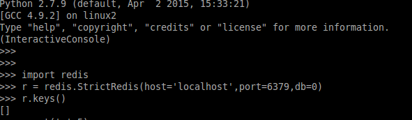
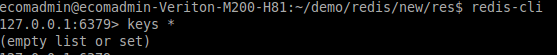
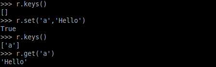
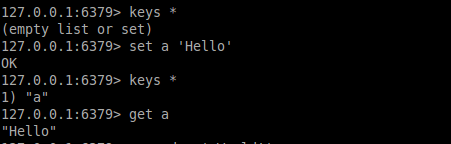
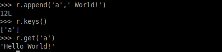
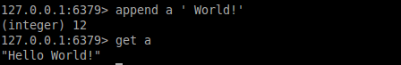

<md-dialog>
	<form>
		<md-toolbar>
			<div class="md-toolbar-tools">
				<h2>append(key,value)</h2>
				<span flex></span>
				<md-button class="md-icon-button" ng-click="cancel()">
					<md-icon md-svg-src="../static/img/ic_close_24px.svg" aria-label="Close dialog">
					</md-icon>
				</md-button>
			</div>
		</md-toolbar>
		<md-dialog-content style="max-width:800px;max-height:810px; ">
			<md-tabs md-dynamic-height md-border-bottom>
				<md-tab label="DESCRIPTION">
					<md-content class="md-padding">
						<h1 class="md-display-2">DESCRIPTION</h1>
						<p>Using this function we can append value for existing key.For example if you have key <strong>Key1</strong> in your redis-db which has value <strong>"Hello"</strong> and if you want to append <strong>" World!"</strong> so that <strong>Key1</strong> can have new appended value <strong>"Hello World!"</strong> in redis, for this we will use <code>append()</code> function</p>
						<p><strong>NOTE:</strong> If that key doesn't exist in redis-db, than it will work as set(), so it will create key(key_name) in redis-db and will set it's value which is given in parameters of append().
						</p>
						<p>
							To explain it's working, we have been using these other functions in <strong>IMAGE</strong> tab :</p>
							<ul>
								<li>redis.StrictRedis()</li>
								<li>keys()</li>
								<li>set()</li>
								<li>get()</li>
							</ul>
						</md-content>
					</md-tab>
					<md-tab label="CODE">
						<md-content class="md-padding">
							<h1 class="md-display-2">CODE SYNTAX</h1>
							<code>r.append(key_name,key_value)</code>
							<ul>
								<li>Here key_name is your key which you want to delete</li>
								<li>key_value is value that we want to append with value of existing value of <strong>key_name</strong>.</li>
							</ul>
							<p>
							<strong><h3>NOTE: </h3></strong>If that keys doesn't exist in redis than <code>append()</code> will work as <code>set()</code>.
							</p>
						</md-content>
					</md-tab>
					<md-tab label="IMAGE">
						<md-content class="md-padding">
							<h2 class="md-display-2">CODE EXECUTION IMAGE</h2>
							<ol type="1">
								<li>Getting Redis Connection and checking all keys by <strong><code>r.keys()</code></strong>. Here < redis_instance> is <strong>r</strong>.</li>
								
								<li>Start Redis Client by command<strong><code>redis-cli</code></strong> in different termianl and for checking all keys, use command <strong><code>keys *</code></strong></li>
								
								<p> Now you can see in both terminals, output of commands give empty list. It means there is no key in redis</p>
								<li>Now let's add a new key <strong>'a'</strong> with value <strong>"Hello"</strong> .
								<p>For this (in python), we will use <strong>set()</strong> function. Syntax for doing this is <strong><code>< redis_instance >.set(< key_name >,< key_value >)</code></strong>,for example:<strong><code>r.set('a','Hello')</code></strong>. Use <strong><code>r.keys()</code></strong> to check whether that key has been saved in redis or not. We also can get value of that key by <strong>get()</strong> function. Syntax for this is: <strong><code>< redis_instance >.get(< key_name >)</code></strong>, in this case <strong><code>r.get('a')</code></strong>
								</p>
								
								<p> In redis-client tab we will use <code>keys *</code> to list down all keys. and <code>set a 'Hello'</code> will create a new key <strong>a</strong> in redis which has value <strong>"Hello"</strong>, now for confirmation we can check key a's value using <code>get a</code> command.
								
								<li>(In Python) Now we will use <code>append()</code> function to append value <strong>" World!"</strong> in key <strong>a</strong>'s value, so that key <strong>a</strong> can have updated value <strong>"Hello World!"</strong>. For that use append() function in this way: <code><strong>r.append('a',' World!')</strong></code>. Now we can check updated value by <code>r.get('a')</code>. </li>
								
								<p>(In redis-client tab) we will use <code>append</code> command to append value <strong>" World!"</strong> in key <strong>a</strong>'s value, so that key <strong>a</strong> can have updated value <strong>"Hello World!"</strong>. For that use append function in this way: <code><strong>append a 'World!'</strong></code>. Now we can check updated value by <code>get a</code>.</p>
								
							</ol>
						</md-content>
					</md-tab>
				</md-tabs>
			</md-dialog-content>

		<!-- <md-dialog-actions layout="row">
		<md-button href="http://en.wikipedia.org/wiki/Mango" target="_blank" md-autofocus>
		More on Wikipedia
		</md-button>
		<span flex></span>
		<md-button ng-click="answer('not useful')" >
		Not Useful
		</md-button>
		<md-button ng-click="answer('useful')" style="margin-right:20px;" >
		Useful
		</md-button>
	</md-dialog-actions> -->
</form>
</md-dialog>

